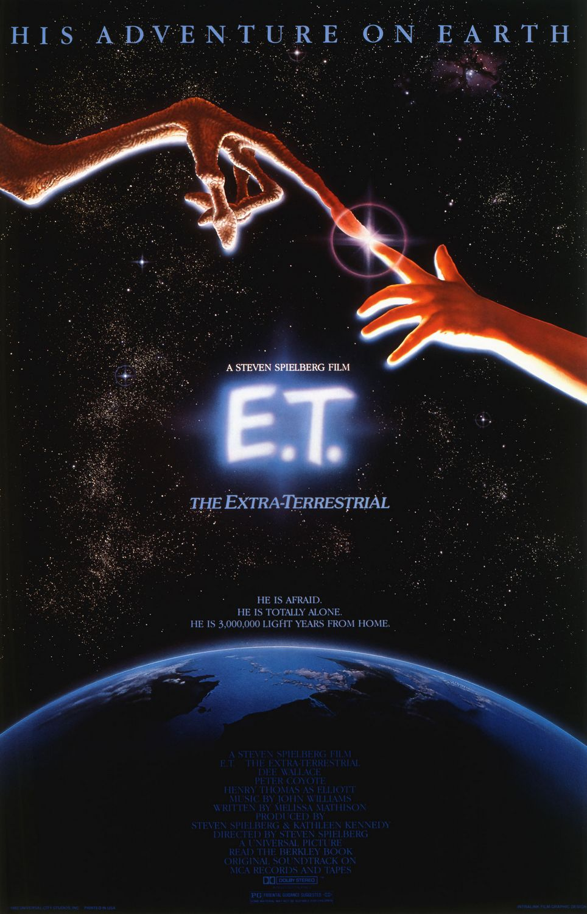

Top $10 Theater
 E.T.外星人（E.T.:The Extra-Terrestrial）—1982 《E.T.外星人》（英語：E.T. the Extra-Terrestrial）是一部1982年的美國科幻電影，由史蒂芬·史匹柏執導 並與凱薩琳·甘迺迪一起擔任製片人，梅麗莎·馬西森編劇，亨利·托馬斯、迪·沃倫斯、勞勃·麥克納夫頓（Robert MacNaughton） 、德魯·巴里摩爾和彼德·考約特主演。講述了名叫埃利奧特的內向男孩與被困在地球的善良外星人成為朋友的故事。 埃利奧特給外星人起名叫「E.T.」（英文「extraterrestrial」的簡稱，意為外星人），他與自己的哥哥和妹妹聯合起來 幫助外星人找到回家的路，並且還要避免被母親及政府發現。 本片的創作理念源於史匹柏在父母於1960年離婚後想像出來的朋友。1980年，他與馬西森會面並在已陷入僵局的科幻恐怖片專案 《夜空》（Night Skies）基礎上發展出新的故事。影片於1981年9月到12月期間在加利福尼亞州進行攝製，拍攝成本為1050萬美元。 與其他大部分電影不同，本片基本上是按時間順序拍攝的，這樣有利於小演員們給出更具可信度的演出。 影片於1982年6月11日經環球影業發行，是一部成功的大片，票房收入超越《星球大戰》，成為當時的歷史電影票房總冠軍， 這個紀錄接下來保持了十年之久才於1993年被史匹柏導演的另一部電影《侏羅紀公園》打破。評論家稱讚這是一個永恆的友情故事， 爛蕃茄的一項調查也將其評為有史以來最偉大的科幻片。電影於1985年再次上映，後又於2002年為紀念影片誕生20周年重新發行， 其中有部分鏡頭有所改動，還增加了一些內容。 通貨膨脹計算器（1982-2015，單位：美元）：